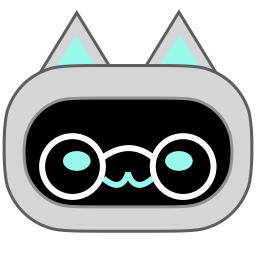
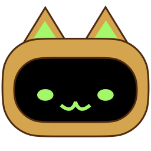
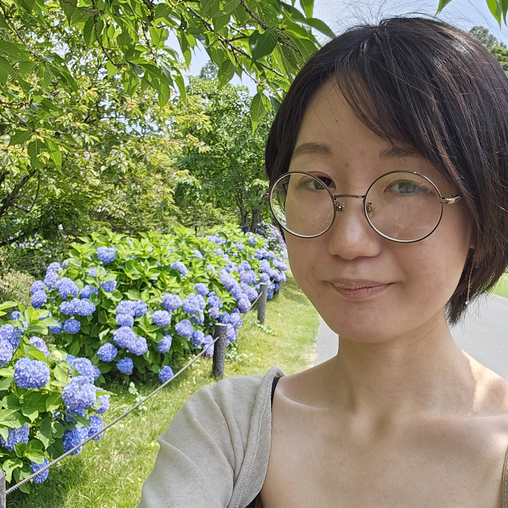
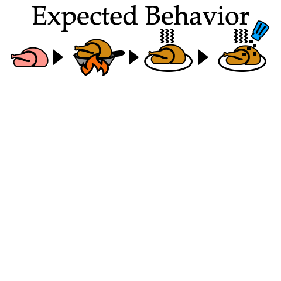
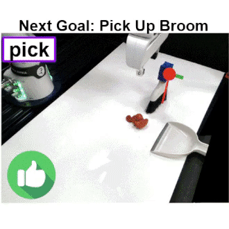
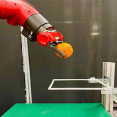

Research
Misc Projects|
Ayano Hiranaka I am a CS PhD student at University of Southern California (USC) co-advised by Professor Daniel Seita and Professor Erdem Biyik. Prior to coming to USC, I completed my Master's degree at Stanford University, where I was a research assistant at Stanford Vision and Learning Lab (SVL). I received my undergraduate degree in mechanical engineering from the University of Illinois at Urbana-Champaign (UIUC). I have also been fortunate to work as a research intern at Sony AI's Deep Generative Modeling team and Toyota Research Institute's Human Interactive Driving Team. My experiences are a unique blend of computer science and mechanical engineering, ranging from AI to robotics to mechanical design (my unpublished projects can be found here). Email / CV / Google Scholar / Github |
 |
{kind=link}
PublicationsI design AI agents, both embodied and non-embodied, that co-evolve with humans through effective communication and collaboration. My research focuses on building human-AI teams that foster mutual improvement by adapting to and learning from one another. Recently, I have been working on developing an AI-assistant that resolve human misconceptions and building a system that streamlines communication and learning between a human user and vision-language-action (VLA) models. |
|
 |
Fix the Mind, Not the Move: Interpretable AI Assistance via Knowledge-Gap Localization
Ayano Hiranaka*, Ya-Chuan Hsu*, Stefanos Nikolaidis, Erdem Bıyık†, Daniel Seita† ICML 2026 project page / paper Diagnosing and correcting misconceptions underlying student mistakes to help humans learn generalizable skills for long-horizon decision-making tasks. |

|
Active Reward Learning and Iterative Trajectory Improvement from Comparative Language Feedback
Eisuke Hirota*, Zhaojing Yang*, Ayano Hiranaka, Miru Jun, Jeremy Tien, Stuart J. Russell, Anca Dragan, Erdem Bıyık IJRR 2025 project page / paper Improving robot trajectories by learning reward functions aligned with human preferences, utilizing a joint represntation space of robot trajectory and natural language feedback. |

|
HERO: Human-Feedback Efficient Reinforcement Learning for Online Diffusion Model Finetuning
Ayano Hiranaka*, Shang-Fu Chen*, Chieh-Hsin Lai*, Dongjun Kim, Naoki Murata, Takashi Shibuya, Wei-Hsiang Liao, Shao-Hua Sun**, Yuki Mitsufuji** ICLR 2025 project page / paper Finetuning text-to-image diffusion models for a variety of tasks in a human-feedback-efficient manner by combining feedback-aligned representation learning and feedback-guided image generation. Work during internship at Sony AI. |

|
NOIR: Neural Signal Operated Intelligent Robot for Daily Activities
Ruohan Zhang*, Sharon Lee*, Minjune Hwang*, Ayano Hiranaka*, Chen Wang, Wensi Ai, Jin Jie Ryan Tan, Shreya Gupta, Yilun Hao, Gabrael Levine, Ruohan Gao, Anthony Norcia, Li Fei-Fei, Jiajun Wu CoRL 2023 project page / paper Brain-robot interface system for everyday activities using EEG signal decoding, primitive skills, and robot intelligence aided by foundation models. |
|
 |
Primitive Skill-based Robot Learning from Human Evaluative Feedback
Minjune Hwang*, Ayano Hiranaka*, Sharon Lee, Chen Wang, Li Fei-Fei, Jiajun Wu, Ruohan Zhang IROS 2023 project page / paper Combining intuitive skill-based action space and human evaluative feedback, enabling a more safe and sample efficient long-horizon task learning in the real world. |
|
 |
A Dual Representation Framework for Robot Learning with Human Guidance
Ruohan Zhang*, Dhruva Bansal*, Yilun Hao*, Ayano Hiranaka, Roberto Martín-Martín, Chen Wang, Li Fei-Fei, Jiajun Wu, Best paper award at Aligning Robot Representations with Humans workshop CoRL 2022 project page / paper A sample-efficient RLHF framework for low-level robot control policy leveraging a human-interpretable high-level state representation for active query. |
Industry ExperiencesI have been fortunate to work as a research intern at the following companies: Toyota Research Institute (Cambridge, 2026): Current intern with the Human Interactive Driving team, mentored by Dr. Deepak Gopinath and Dr. Guy Rosman. Sony AI (Tokyo, 2024): Developed an RLHF framework for finetuning text-to-image diffusion models, mentored by Dr. Chieh-Hsin Lai in the Deep Generative Modeling team, and Prof. Shao-Hua Sun. Work published at ICLR 2025. |
ServiceReviewing: I review for ICLR, ICML, CoRL, ICRA, and workshops at RSS. Mentoring: I help organize and serve as mentor for the USC CS Undergraduate Mentorship Program that prepare undergraduate students for research and career in CS. |